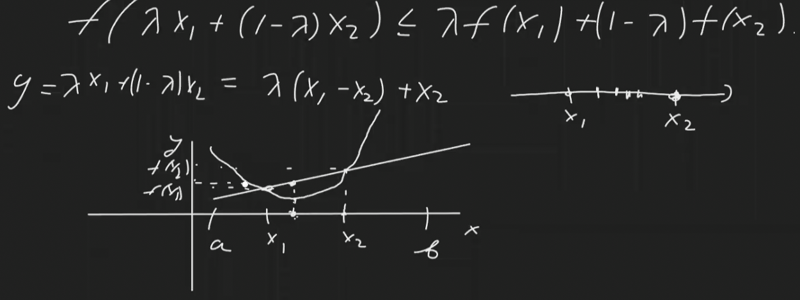

Выпуклость и вогнутость
Выпуклость definition
Пусть \(\lambda \in [0, 1]\), \(f\) определена на \((a, b)\). Тогда \(f\) называется выпуклой на \((a, b)\), если \(\forall x_{1}, x_{2} \in (a, b) \;\; f(\lambda x_{1} + (1 - \lambda)x_{2}) \leqslant \lambda f(x_{1}) + (1 - \lambda)f(x_{2})\)
Геометрический смысл
Какие бы я 2 точки ни взял, проведя между ними хорду, функция будет провисать (или совпадать с хордой).

Вогнутость
Если в неравенстве поменять знак на \(\geqslant\), то функция называется вогнутой.